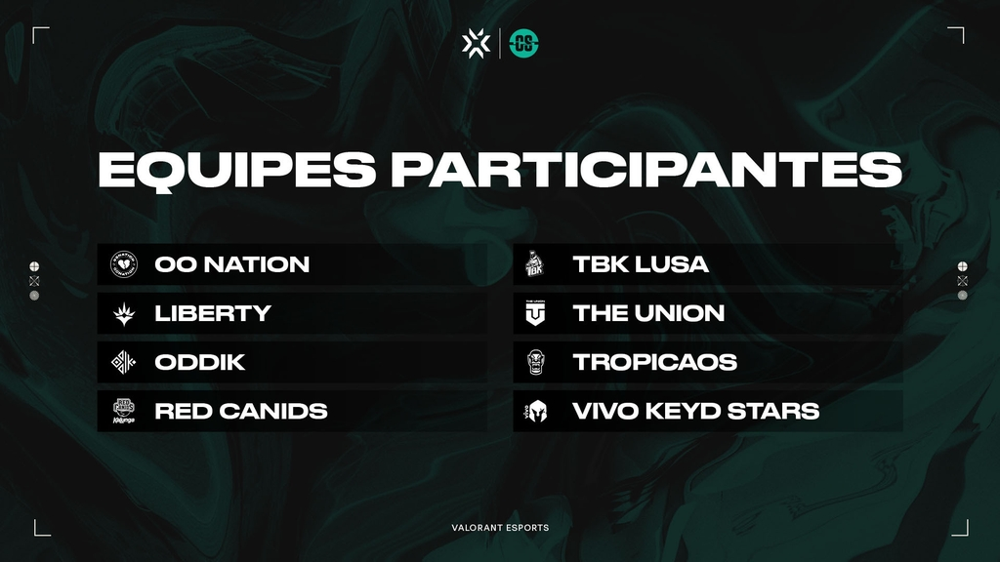
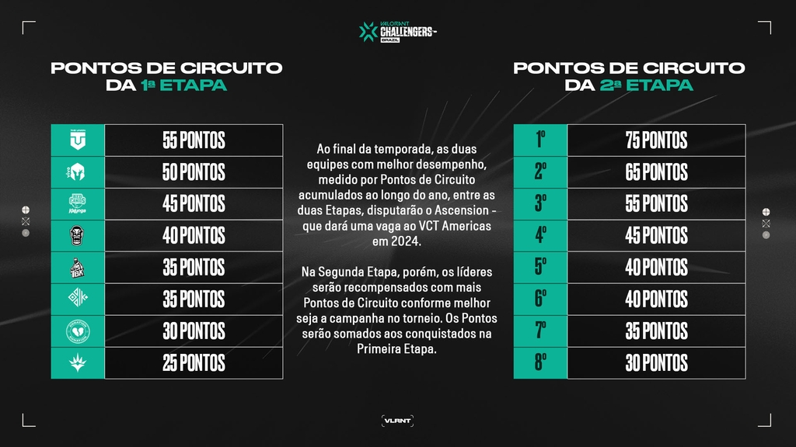

A Segunda Etapa do VALORANT Challengers Brazil vai começar!
Abaixo, apresentamos mais detalhes da liga nacional,que será decisiva para a classificação de duas equipes
ao Ascension, torneio contra equipes da América do Norte e LATAM que dá uma vaga no VCT Americas em 2024.
A partir do dia 5 de abril, sempre às quartas e quintas-feiras e a partir de 17h (horário de Brasília),
00 Nation, Liberty, ODDIK, RED Canids Kalunga, TBK Lusa, The Union, TropiCaos e Vivo Keyd Stars voltam
a se enfrentar em busca de ter a possibilidade para ser promovido à Liga das Américas.
Todos os jogos, claro, terão transmissão ao vivo em nossos canais oficiais. A hashtag oficial será sempre
a #ChallengersBR.Todas as partidas ocorrem em formato presencial, no estúdio da Riot Games, em São Paulo.
Ao final da temporada, as duas equipes com melhor desempenho, medido por Pontos de Circuito acumulados
ao longo do ano,entre as duas Etapas, disputarão o Ascension - que dará uma vaga ao VCT Americas, onde já
estão as brasileiras FURIA,LOUD e MIBR.
Após a disputa na Primeira Etapa, assim está a classificação no momento:

